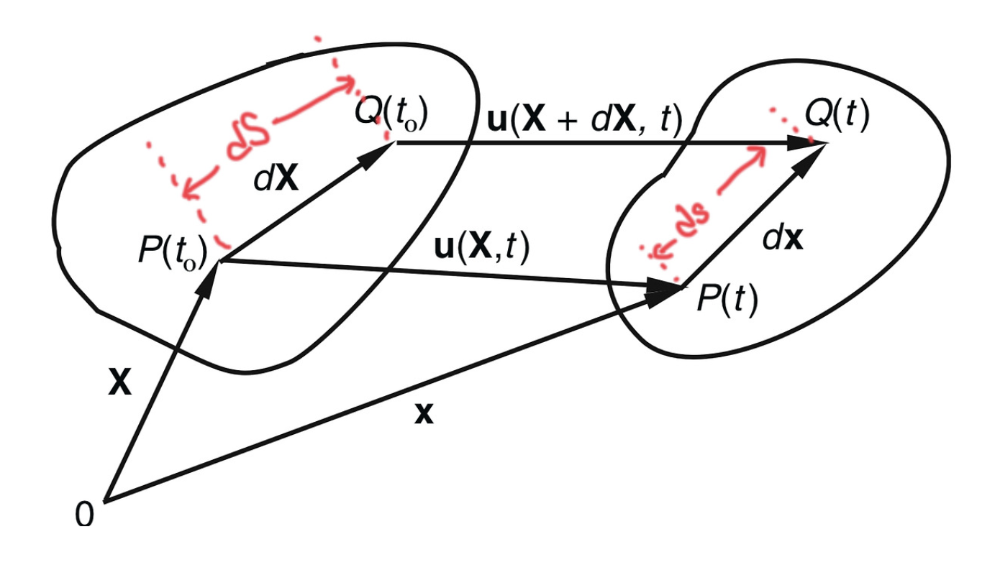
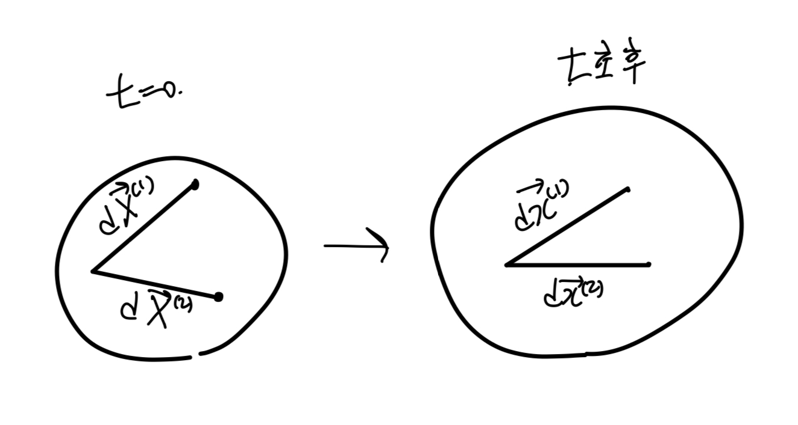
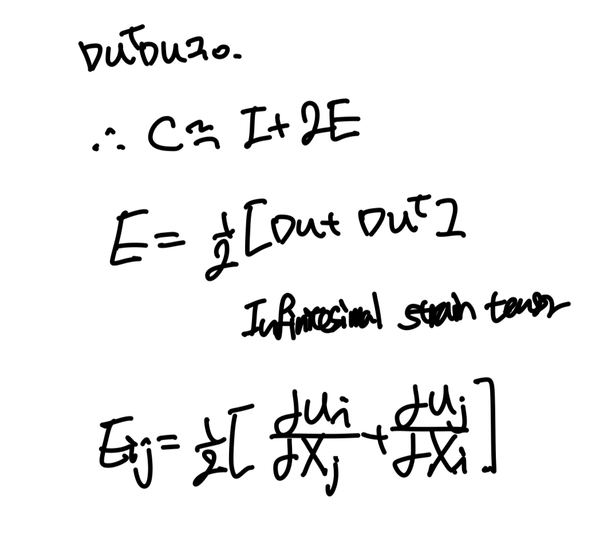
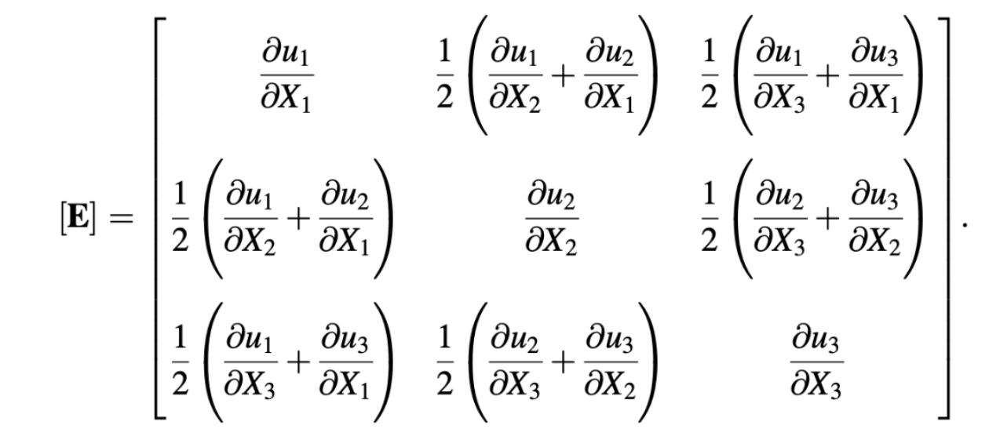
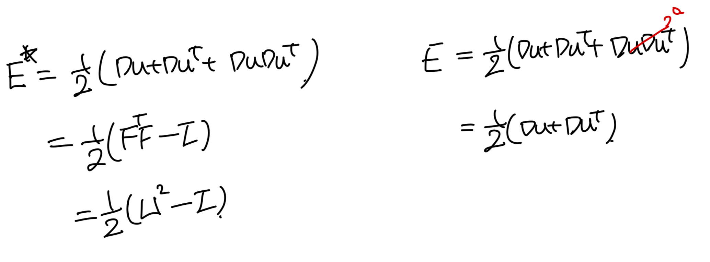

<!DOCTYPE html>
<html lang="ko">
<head>
  <meta charset="utf-8">
  <meta name="viewport" content="width=device-width, initial-scale=1">
  <title>Ch1 Kinematics-part3 - Strain tensor(E*, E) | Sehyeog Kim</title>
  <link rel="stylesheet" href="../../../assets/css/style.css">
</head>
<body>
  <!-- Mobile header -->
  <header class="mobile-header">
    <span class="site-title">Sehyeog Kim</span>
    <button class="menu-toggle" aria-label="Menu">&#9776;</button>
  </header>
  <div class="sidebar-overlay"></div>

  <div class="site-wrapper">
    <!-- Sidebar -->
    <aside class="sidebar">
      <div class="sidebar-bg">
        
      </div>
      <div class="sidebar-profile">
        
        <h1 class="profile-name">Sehyeog Kim</h1>
        <p class="profile-bio">AI &amp; Computational Engineering<br>Knowledge Base</p>
        <div class="profile-links">
          <a href="https://github.com/Sehyeogkim" target="_blank" rel="noopener">
            <svg viewBox="0 0 16 16" width="16" height="16" fill="currentColor"><path d="M8 0C3.58 0 0 3.58 0 8c0 3.54 2.29 6.53 5.47 7.59.4.07.55-.17.55-.38 0-.19-.01-.82-.01-1.49-2.01.37-2.53-.49-2.69-.94-.09-.23-.48-.94-.82-1.13-.28-.15-.68-.52-.01-.53.63-.01 1.08.58 1.23.82.72 1.21 1.87.87 2.33.66.07-.52.28-.87.51-1.07-1.78-.2-3.64-.89-3.64-3.95 0-.87.31-1.59.82-2.15-.08-.2-.36-1.02.08-2.12 0 0 .67-.21 2.2.82.64-.18 1.32-.27 2-.27.68 0 1.36.09 2 .27 1.53-1.04 2.2-.82 2.2-.82.44 1.1.16 1.92.08 2.12.51.56.82 1.27.82 2.15 0 3.07-1.87 3.75-3.65 3.95.29.25.54.73.54 1.48 0 1.07-.01 1.93-.01 2.2 0 .21.15.46.55.38A8.013 8.013 0 0016 8c0-4.42-3.58-8-8-8z"/></svg> GitHub
          </a>
        </div>
      </div>
      <nav class="sidebar-nav">
        <a href="/" class="nav-item nav-home">Home</a>
        <span class="nav-label">Categories</span>
        <a href="/blog/advanced-engineering-mathematics/" class="nav-item">Advanced_Engineering_Mathematics<span class="nav-post-count">14</span></a>
        <a href="/blog/agentic-ai/" class="nav-item">Agentic_AI<span class="nav-post-count">8</span></a>
        <a href="/blog/blood-flow-and-metabolism/" class="nav-item">Blood-Flow-and-Metabolism<span class="nav-post-count">12</span></a>
        <a href="/blog/cardiovascular-diseases/" class="nav-item">CardioVascular_Diseases<span class="nav-post-count">8</span></a>
        <a href="/blog/computational-linear-algebra/" class="nav-item">Computational-Linear-Algebra<span class="nav-post-count">15</span></a>
        <a href="/blog/continuum-mechanics/" class="nav-item active">Continuum-Mechanics<span class="nav-post-count">9</span></a>
        <a href="/blog/deep-learning/" class="nav-item">Deep-learning<span class="nav-post-count">14</span></a>
        <a href="/blog/finite-element-method/" class="nav-item">Finite-Element-Method<span class="nav-post-count">1</span></a>
        <a href="/blog/fluid-mechanics/" class="nav-item">Fluid_Mechanics<span class="nav-post-count">18</span></a>
        <a href="/blog/gas-dynamics/" class="nav-item">Gas_Dynamics<span class="nav-post-count">24</span></a>
        <a href="/blog/heat-transfer/" class="nav-item">Heat-transfer<span class="nav-post-count">8</span></a>
        <a href="/blog/machine-learning/" class="nav-item">Machine_Learning<span class="nav-post-count">11</span></a>
        <a href="/blog/numerical-heat-transfer-and-fluid-flow/" class="nav-item">Numerical-Heat-transfer-and-Fluid-flow<span class="nav-post-count">14</span></a>
        <a href="/blog/sensitivity-analysis/" class="nav-item">Sensitivity_Analysis<span class="nav-post-count">3</span></a>
        <a href="/blog/solid-mechanics/" class="nav-item">Solid_Mechanics<span class="nav-post-count">25</span></a>
        <a href="/blog/thermodynamics/" class="nav-item">Thermodynamics<span class="nav-post-count">14</span></a>
        <a href="/blog/viscous-flow/" class="nav-item">Viscous_Flow<span class="nav-post-count">28</span></a>
      </nav>
    </aside>

    <!-- Main content -->
    <main class="main-content">
      <div class="breadcrumb">  <a href="/">Home</a><span class="sep">/</span>  <a href="/blog/continuum-mechanics/">Continuum-Mechanics</a><span class="sep">/</span>  <span>Ch1 Kinematics-part3 - Strain tensor(E*, E)</span></div>
<a href="/blog/continuum-mechanics/" class="back-link">&larr; Back to Continuum-Mechanics</a>
<div class="page-header"><h1>Ch1 Kinematics-part3 - Strain tensor(E*, E)</h1></div>
<div class="post-meta"><span class="meta-item"><span class="meta-label">Date:</span> 2025-01-31</span><span class="meta-item"><span class="meta-label">Category:</span> Continuum-Mechanics</span><span class="meta-item"><span class="meta-label">Source:</span> <a href="https://jeffdissel.tistory.com/157" target="_blank" rel="noopener">link</a></span></div>
<article class="post-content"><p>지난 시간에 Deformation Gradient Tensor(F),<br />
Cauchy Green tensor(C,B)에 대해서 분석해보았다.<br />
이번에는 strain tensor즉. 길이변화에 관한 tensor들을 정의해보자.<br />
<br />
지금까지 정의한 relationships.<br />
- dx = F dX<br />
- F = I + ∇u<br />
- F = RU = UV<br />
- C = F^T F = U^2<br />
- u(X,t) = x(X,t) - X<br />
1. Lagrangian Strain Tensor(E<em>)<br />
C의 F를 정의대로 전개해준 후,<br />
E</em> 을<br />
Lagrangian Strain tensor<br />
로 정의한다.<br />
<br />
이렇게 정의한 이유를 tensor의<br />
물리적 의미로 살펴보자.<br />
<br />
<br />
변형전 후, 임의의 내부벡터(1),(2)<br />
dx = F dX, C = F^T F 임을 이용하면.<br />
<br />
여기서 먼저 E의 diagonal term을 살펴 보기 위해서,<br />
(1) 과 (2)가 같은 방향이라고 가정하자.<br />
<br />
Strain의 개념은 길이의 변화량 / 초기 길이 임을 감안하면,<br />
위의 정의가 strain으로써 가능함을 알 수 있다.<br />
이제 off-diagonal term을 살펴보기 위해,<br />
변형전 (1),(2)가 수직이었다고 가정하자.<br />
<br />
2. Infinitesimal Strain tensor (E)<br />
<br />
여기 에서<br />
아주 작은 변형이라는 가정<br />
을 추가해주면,<br />
high order term을 소거해줄 수 있다.<br />
<br />
<br />
3*3 Infintesimal Tensor.<br />
정확히 항들의 의미를 분석하기 위해서,<br />
Diagonal term, off-diagonal term들을 살펴보자.<br />
<br />
변형전 후, 임의의 내부벡터(1),(2)<br />
길이 변화를 살펴보기 위한 방법은 내적이 최고이다.<br />
</p>
<h1>Diagonal Term of E</h1>
<p><br />
즉, E tensor의 diagonal term은<br />
고체역학 시간에 우리가 배운 정의인,<br />
Normal strain<br />
을 뜻한다.</p>
<h1>Off diagonal Term of E.</h1>
<p><br />
shear strain/2 = Emn<br />
즉, off diagonal term임을 위와 같이 증명할 수 있다.<br />
다시 말하면, Shear strain의 경우 대칭이므로,<br />
ex) r12 = r21<br />
따라서, Eij = Eji 즉 Symmetric Tensor임을 가볍게 알 수 있다.<br />
선형대수학 시간에 배웠겠지만,<br />
symmetric Tensor<br />
인 경우 아주 중요하고<br />
대단한 특징이 존재한다.<br />
1. 3개의 직교한 고유벡터가 존재.<br />
2. 3개의 실수인 고유값 존재.<br />
-&gt; E 대각화 가능.<br />
대각화가 가능하다는 말을 정확히 다시 표현하면,<br />
변형전 coordinate의 기저벡터(1,2,3)들을<br />
E의 Eigen vector(n1,n2,n3)로 바꾸게 되면,<br />
shear strain = 0 이 되는<br />
diagonalized E<br />
로 바꿀 수 있다는 말이다.<br />
<br />
<br />
Diagonalized E<br />
그리고, 고유값 분해를 통해서<br />
우리는 이 대각화된 E의 대각성분(E1,E2,E3)는<br />
사실 기존 E의 고유값임을 알 수 있다.<br />
E1,E2,E3 are called 'Principal Strain'<br />
여기서 고유값을 찾기위해서<br />
det(E- λ I ) = 0<br />
전개하면, 다음과 같이 3차방정식이 나온다.<br />
그리고 3차방정식의 계수들을 I1,I2,I3로 표기하자.<br />
<br />
여기서의 계수들을 Invariants 1,2,3로 위와같이 정의하고,<br />
추후에 아주아주아주 중요하게 쓰인다.</p>
<hr />
<p>지금까지 Strain tensor 두가지<br />
1. Lagrangian Strain tensor(Large deformation, E*)<br />
2. Infintesimal Strain tenesor(small deformation, E)<br />
에 대해서 알아보았다.<br />
</p>
<h1>E</h1>
<p>small deformation가정의 경우 strain이 굉장히<br />
간결하게 표현되고, 고체역학에서 배웠던<br />
normal shear strain과 동일함을 확인할 수 있었다.</p>
<h1>E*</h1>
<p>먼저, E*의 경우 E보다 더 정확한 값임은 당연하다.<br />
(high order term 포함)<br />
또한, FTF = U^2의 경우,<br />
rotation이 제외된 순수한 stretching을 의미하며<br />
아무것도 stretch 되지 않는 상태인 I로 뺀 값을 strain으로 갖는다.<br />
그리고 무엇보다. F로 표현되기 때문에<br />
(F: Material, Larangian<br />
description)<br />
즉, 변형전 좌표계에서 살펴본 strain값이므로<br />
더 정확하다고 말할 수 있다.</p></article>
      <footer class="site-footer">
        <p>&copy; 2026 Sehyeog Kim. Built with gitfolio-inspired theme.</p>
      </footer>
    </main>
  </div>

  <script src="../../../assets/js/main.js"></script>
</body>
</html>